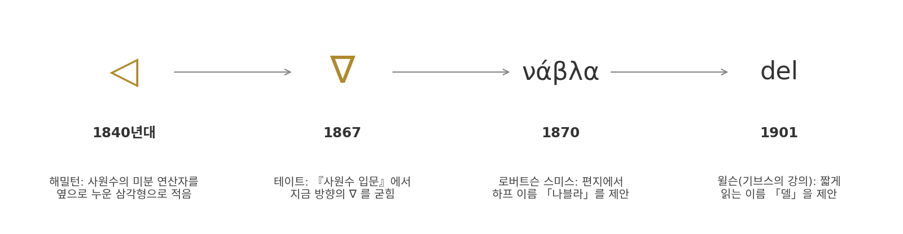
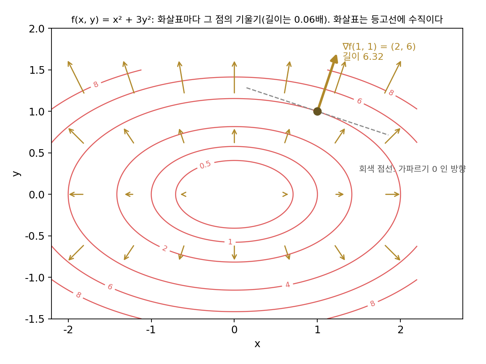
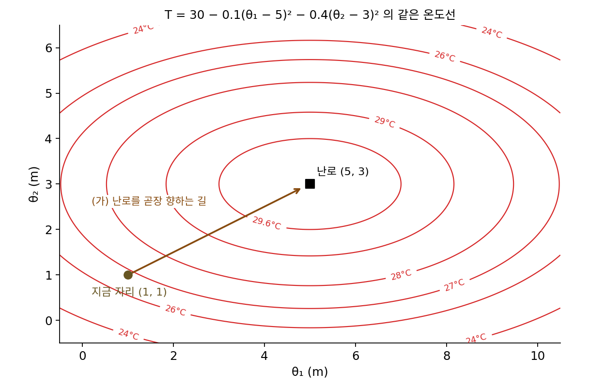
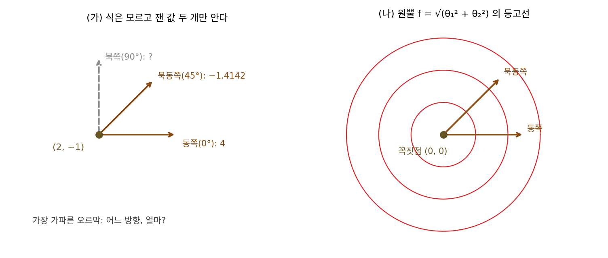
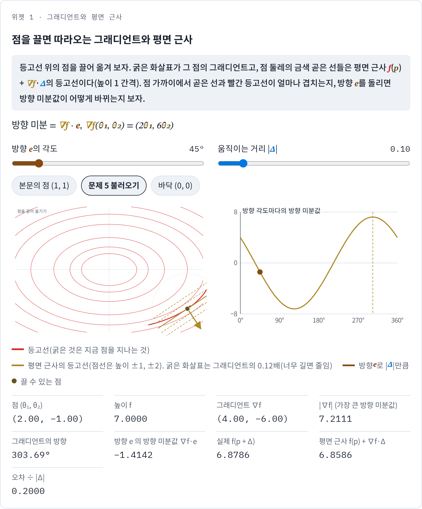
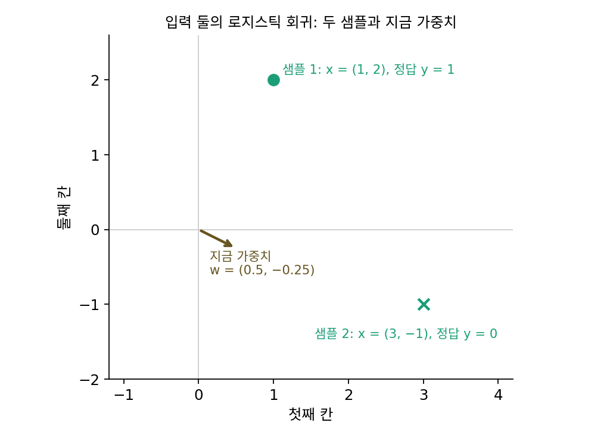

그래디언트: 가장 가파른 오르막
변수가 하나면 미분값은 숫자 하나다. 오른쪽으로 가면 얼마나 오르고 왼쪽으로 가면 얼마나 내려가는지가 미분값 하나에 다 들어 있다. 그런데 손실은 파라미터 수백만 개의 함수이고, 한 스텝은 그 수백만 칸을 한꺼번에 바꾸는 방향 하나다. 파라미터를 하나씩만 바꿔 본 편미분 수백만 개는 쉽게 구할 수 있지만, 우리가 실제로 걷는 방향은 그 축들 가운데 어느 것도 아니다. 편미분들만 알면 비스듬한 방향을 포함해 모든 방향으로 얼마나 오르는지 알 수 있을까? 그리고 그 많은 방향 가운데 가장 가파른 것은 어느 쪽일까?
역사: 해밀턴의 누운 삼각형과 하프 이름
편미분들을 한 묶음으로 다루는 기호는 물리학자들이 먼저 원했다. 아일랜드의 수학자이자 물리학자 윌리엄 로언 해밀턴(William Rowan Hamilton)은 세 방향의 편미분을 하나로 묶은 연산자, 지금 말로 하면 i∂/∂x + j∂/∂y + k∂/∂z(∂는 파셜, 편미분 기호)를 사원수(실수 하나와 허수 단위 i, j, k 셋을 묶은 수) 이론 안에서 다뤘다. 그는 1840년대 중반 사원수에 대한 글에서 이 연산자를 옆으로 누운 삼각형 ◁로 적었다. 지금 방향의 ∇는 그가 이미 다른 뜻으로 많이 써서 피했다는 각주가 남아 있다.
이 기호를 지금의 ∇로 굳힌 사람은 스코틀랜드의 피터 거스리 테이트(Peter Guthrie Tait)다. 그는 1867년 『사원수 입문(An Elementary Treatise on Quaternions)』에서 ∇를 썼다. 남은 것은 이름이었다. 1870년 11월 10일, 성서학자 윌리엄 로버트슨 스미스(William Robertson Smith)가 테이트에게 보낸 편지에서 이 기호를 「나블라(nabla)」라 부르자고 했다. 거꾸로 선 삼각형이 고대의 하프와 닮았는데, 그 하프의 그리스 이름이 νάβλα였다는 것이다. 테이트와 제임스 클러크 맥스웰(James Clerk Maxwell)은 사적인 편지에서 이 이름을 농담처럼 주고받았고, 맥스웰이 이 이름을 공개된 글에 쓴 것은 테이트를 「나블라 위의 수석 악사」라 부른 우스개 시의 제목 한 번뿐이었다고 한다. 맥스웰이 진지한 글에 이 이름을 쓰기를 꺼려서 테이트도 한동안 이 낱말을 책에 넣지 못했다고 전해진다. 1901년 기브스의 강의를 엮은 에드윈 윌슨(Edwin Wilson)의 『벡터 해석』은 더 짧게 읽히는 「델(del)」을 제안했고, 지금은 두 이름이 함께 쓰인다.


기호 이름 하나 정하는 데 20년 넘게 걸렸네요. 아무 이름이나 붙이면 되는 거 아니에요?

이름이 없으면 강의에서 소리 내어 읽지도 못해요. 그런데 더 큰 벽은 기호가 가리키는 대상이었어요. 해밀턴은 편미분 세 개를 어디에 담았죠?

사원수 안에요. 실수 하나에 i, j, k 셋을 붙인 수니까… 편미분 세 칸만 따로 떼어 낸 묶음은 없었던 거네요.

사원수에서 떼어 낸 벡터만으로 미적분을 적는 방식은 기브스 같은 사람들이 그 뒤에 따로 다듬었어요. 윌슨의 1901년 『벡터 해석』이 그 강의를 엮은 책이고요.

지금은 loss.backward() 한 번이면 파라미터 수만큼의 편미분이 한 묶음으로 나오는데요. 칸이 세 개뿐일 때도 담을 그릇부터 만들어야 했던 거네요.

편미분을 한 묶음으로 묶으면, 그 묶음이 가리키는 방향에도 따로 뜻이 있어요? 칸 하나하나는 축 방향으로 오르는 비율일 뿐인데요.
θ₁² + 3θ₂² 위에서 방향 미분 재기
방향마다 오르는 정도가 다르다는 것을 눈으로 보려면, 동그란 그릇보다 한쪽으로 길쭉한 그릇이 좋다. 동그란 그릇에서는 가장 가파른 방향이 늘 그릇 바닥 반대쪽이라 별로 놀랄 일이 없기 때문이다. 그래서 바닥이 원점에 있고 θ₂ 방향이 θ₁ 방향보다 세 배 가파르게 휜 그릇 f(θ₁, θ₂) = θ₁² + 3θ₂²을 골랐다. 점 (1, 1)에 서 있다고 하자. 높이는 4다.
θ₂를 그대로 두고 θ₁만 바꾸면 2θ₁ = 2의 기울기로 오르고, θ₁를 두고 θ₂만 바꾸면 6θ₂ = 6의 기울기로 오른다. 2와 6이 두 편미분이다. 이제 길이 1인 방향 e를 여러 개 골라 그 방향으로 아주 조금 갈 때 높이가 오르는 비율(높이의 변화 ÷ 움직인 거리)을 재 보자. 이 비율을 그 방향의 방향 미분이라 한다(각도는 θ₁축에서 시곗바늘 반대로 잰다).
| 방향 각도 | 방향 e | 방향 미분값 (실제로 잰 값) | 2·e₁ + 6·e₂ |
|---|---|---|---|
| 0° | (1, 0) | 2.0000 | 2.0000 |
| 45° | (0.7071, 0.7071) | 5.6569 | 5.6569 |
| 90° | (0, 1) | 6.0000 | 6.0000 |
| 71.57° | (0.3162, 0.9487) | 6.3246 | 6.3246 |
| −18.43° | (0.9487, −0.3162) | 0.0000 | 0.0000 |
| 251.57° | (−0.3162, −0.9487) | −6.3246 | −6.3246 |
두 가지가 보인다. 첫째, 어느 방향의 방향 미분이든 편미분 둘을 방향의 두 칸에 곱해 더한 값과 소수 넷째 자리까지 같다. 편미분 두 개만 알면 모든 방향의 방향 미분을 알 수 있다는 뜻이다. 둘째, 방향 미분값이 가장 큰 방향은 축 방향(6)이 아니라 71.57° 방향이고, 그때 방향 미분값은 6.3246이다. 방향을 0.1° 간격으로 다 돌려 봐도 가장 큰 값은 71.6°에서 6.3246이 나온다. 71.57°는 바로 편미분을 늘어놓은 벡터 (2, 6)의 방향이고, 6.3246은 그 벡터의 길이 √(2² + 6²) = √40이다. 거꾸로 (2, 6)의 반대쪽으로 가면 가장 가파르게 내려가고(−6.3246), (2, 6)에 수직인 −18.43° 방향으로 가면 높이가 바뀌지 않는다. 그 방향이 높이 4인 등고선을 따라가는 방향이다.
이렇게 편미분을 모두 모은 벡터를 그래디언트 (가장 가파른 오르막 / gradient)라 하고 ∇f로 적는다(∇은 「나블라」 또는 「델」로 읽는다). 변수가 하나일 때 그래프 접선이 얼마나 기울었는지를 말하던 숫자 하나는 「기울기」(slope)라 불렀는데, 그 미분값은 칸이 하나뿐인 그래디언트다. 이 책은 「기울기」를 직선과 접선의 기울어진 정도에만 쓰고, 편미분을 모은 벡터는 「그래디언트」라 부른다. 어느 한 방향 e로 갈 때 높이가 오르는 비율(숫자 하나)은 방향 미분 (그 방향으로 오르는 비율 / directional derivative)이다.
가장 가파른 방향이 왜 그래디언트 방향인지는 내적에서 바로 나온다. 방향 미분 ∇f · e는 |∇f| × cos(두 벡터 사이 각)이므로, 각이 0일 때 가장 크고 그때의 방향 미분값이 |∇f|다. 셋째 식은 미분 가능성의 직선 근사를 평면으로 넓힌 것이다. (1, 1)에서 (0.1, −0.05)만큼 움직이면 근삿값은 4 + 2 × 0.1 + 6 × (−0.05) = 3.9이고 실제 값은 3.9175다. 움직임을 열 배 줄여 (0.01, −0.005)로 하면 근삿값 3.99, 실제 3.9902로 오차가 0.0175에서 0.000175로 백 배 준다. 오차를 움직인 거리로 나눈 값도 0.1565에서 0.0157로 줄어든다. 평면 근사가 통한다는 것, 다시 말해 그래디언트 하나로 모든 방향의 방향 미분이 정해진다는 것이 변수가 여럿일 때의 「미분 가능」이다.

ML에서: 파라미터 수만큼의 칸
신경망에서 그래디언트의 칸 수는 파라미터 수와 같다. 손글씨 숫자 그림(28 × 28 = 784칸)을 받아 은닉층 128칸을 거쳐 열 가지 숫자를 고르는 작은 다층 퍼셉트론만 해도 가중치와 편향을 합쳐 784 × 128 + 128 + 128 × 10 + 10 = 101,770개다. 파이토치에서 loss.backward()를 부르면 파라미터 텐서마다 같은 모양의 .grad가 채워지는데, 그것을 모두 한 줄로 이어 붙인 101,770칸짜리 벡터가 이 손실의 그래디언트다. 그 벡터 하나가 101,770차원 공간에서 손실이 가장 가파르게 오르는 방향을 가리키고, 경사하강은 그 반대쪽으로 걷는다.
「가장 가파르다」는 말에는 숨은 약속이 하나 있다. 길이 1인 방향들 가운데서 골랐는데, 여기서 길이는 칸마다의 제곱을 더한 보통의 길이였다. 길이를 다른 자로 재면, 이를테면 칸 가운데 가장 큰 값으로 재면, 같은 손실에서도 가장 가파른 방향이 달라진다. 길이를 재는 자에 따라 가장 가파른 방향이 달라진다는 점은 뒤에서 큰 모델의 옵티마이저들을 견줄 때 다시 중요해진다.
문제 4. 난로를 향해 걸으면 가장 빨리 따뜻해질까
겨울 거실의 온도가 자리 (θ₁, θ₂)(미터)에서 T = 30 − 0.1(θ₁ − 5)² − 0.4(θ₂ − 3)²(°C)라고 하자. 난로는 가장 따뜻한 자리 (5, 3)에 있고, 지금 (1, 1)에 서 있다. (가) 난로를 곧장 향해 걸을 때 1 m당 오르는 온도는? (나) 가장 빨리 따뜻해지는 방향과 그 방향으로 1 m당 오르는 온도는? (다) 온도가 바뀌지 않는 방향은?

가장 따뜻한 곳이 난로니까 난로를 향해 걷는 게 가장 빨리 따뜻해지겠지. 방향은 (4, 2)를 길이 1로 줄인 (0.8944, 0.4472)야.
난로 방향으로 1 m당 오르는 온도를 그래디언트로 계산해 보세요. 그리고 다른 방향과도 견줘 보고요.
지금 자리의 편미분이 θ₁로 0.8, θ₂로 1.6이에요. 난로 방향이면 0.8 × 0.8944 + 1.6 × 0.4472 = 1.4311°C/m고요. 그런데 그래디언트 (0.8, 1.6) 방향으로 가면 길이 그대로 1.7889°C/m예요. 난로 쪽보다 빨라요.

이상해. 가장 따뜻한 곳을 향하는 게 가장 빨리 따뜻해지는 길이 아니라니. 각도로 보면 난로는 26.57°, 그래디언트는 63.43° 쪽이야.
온도가 θ₁ 방향과 θ₂ 방향으로 똑같이 떨어지나요?

아니요, θ₂ 쪽 계수가 0.4로 네 배예요. 그럼 같은 온도선이… θ₁ 쪽으로 길쭉한 타원이겠네요.
그 타원 위에서, 난로를 곧장 향하는 선은 온도선을 어떻게 지나죠?
비스듬히 지나요. 가장 가파른 길은 온도선에 수직으로 나가는 길이고, 그건 짧은 축 쪽으로 더 꺾여요.
그럼 방이 동그랬으면?
두 방향이 같았겠지. (다)는 그래디언트에 수직인 (0.8944, −0.4472) 방향이야. 거기서는 방향 미분값이 0이고.

0.5 m만 걸어 봐도 그래디언트 쪽은 0.8094°C, 난로 쪽은 0.6755°C 오르네요. 시험 점수를 올리려고 무조건 「제일 점수가 높은 친구 공부법」을 따라 하는 것보다, 지금 내 상태에서 점수가 가장 빨리 오르는 과목부터 손대는 게 낫다는 얘기네요. 점수가 온도이고, 과목을 고르는 게 걸어갈 방향을 고르는 거예요.
문제 5. 두 방향만 재고 나머지 맞히기
그릇 f(θ₁, θ₂) = θ₁² + 3θ₂²의 점 (2, −1)에서, 식은 모르는 채로 동쪽(0°)과 북동쪽(45°)의 방향 미분값만 쟀더니 4와 −1.4142였다. (가) 이 두 숫자만으로 북쪽(90°)의 방향 미분값과 가장 가파른 오르막의 방향 미분값을 맞혀라. (나) 원뿔 f = √(θ₁² + θ₂²)의 꼭짓점 (0, 0)에서 두 방향의 방향 미분으로 나머지를 맞히면 어떻게 되는가? (풀어 본 뒤 위젯 1의 「문제 5 불러오기」로 확인해 보자.)

두 방향이면 정보가 모자라요. 방향이 무한히 많은데 둘만 재서 나머지를 어떻게 알아요.
방향 미분이 그래디언트와 방향의 내적이라는 걸 쓰면, 모르는 것은 몇 개죠?
그래디언트의 두 칸 a, b뿐이에요. 그럼 잰 숫자 두 개로 풀 수 있겠네요. 동쪽은 a = 4고요.
북동쪽은?
(a + b)/√2 = −1.4142라서 b = −2 − 4 = −6. 그래디언트는 (4, −6)이야.
그럼 (가)의 두 값은요?
북쪽은 b 그대로 −6이고, 가장 가파른 오르막은 √(16 + 36) = 7.2111이요.
식으로 편미분을 구해도 (2θ₁, 6θ₂) = (4, −6)이라 맞아.

원뿔도 해 볼게요. 꼭짓점에서 동쪽으로 조금 가면 방향 미분값 1, 북동쪽도 1… 서쪽도 1이고 남서쪽도 1이에요. 모든 방향이 1이에요. 같은 방법이면 그래디언트가 (1, 0.4142)가 되고, 서쪽은 −1이어야 하는데 실제로는 1이에요. 안 맞아요.

두 방향만으로 나머지를 맞힐 수 있었던 건 무엇을 믿었기 때문이었죠?

방향 미분이 방향에 대한 내적, 그러니까 일차식이라는 걸 믿었어요. 그게 미분 가능하다는 뜻이고요.
원뿔에서는 그게 어디서 깨진 거야?
일차식이면 반대 방향의 방향 미분은 부호만 바뀌어야 하잖아. 그런데 꼭짓점은 사방이 다 오르막이라 동쪽도 서쪽도 1이었지. 확대해도 평면이 되지 않는 점이야. 선형대수에서 일차 사상은 기저 둘에서의 값만 알면 다 정해진다고 배웠던 게 그대로 쓰인 거네요.

미분 가능하면 두 번 재서 끝, 아니면 아무리 재도 못 맞히는 거네요. 설문을 문항 두 개만 돌려도 되는 건 응답이 그 두 개로 정해지는 구조일 때뿐인 거랑 같아요.
위젯 1에서 문제 5 설정을 불러와 방향 e를 0°, 45°, 90°로 돌려 보고, 두 학생이 맞힌 값과 견줘 보세요.

문제 6. 한 샘플의 그래디언트는 왜 입력을 닮았나
입력 둘의 로지스틱 회귀(입력의 가중합을 시그모이드에 넣어 정답이 1일 확률로 읽는 모델)에서 샘플 하나 x = (1, 2), 정답 y = 1, 지금 가중치 w = (0.5, −0.25)(편향 없음)이다. 손실은 크로스 엔트로피 −log p이고 p는 모델이 내놓은 1일 확률이다. (가) 손실의 그래디언트는? (나) 학습률 0.1로 한 스텝 가면 손실은 1차 근사로 얼마나 줄고 실제로는 얼마나 주는가? (다) 다른 샘플 x = (3, −1), y = 0의 그래디언트와 견주면 무엇이 보이는가?

가중합이 0.5 − 0.5 = 0이니까 p = 0.5, 손실은 0.6931이에요. 그래디언트는 편미분을 하나씩 수치로 구하면 (−0.5, −1)이에요.
숫자가 입력 (1, 2)와 닮았네요. 우연일까요?
가중합에서 한 번 끊어서 볼게요. 손실을 가중합 z로 미분하면 p − y = −0.5예요.
z를 w의 각 칸으로 미분하면요?
z가 입력과 가중치를 칸마다 곱해 더한 거니까… 입력의 같은 번째 칸이요. 그래서 그래디언트 = (p − y) × x = −0.5 × (1, 2)예요.
둘째 샘플도 해 볼게요. p = 0.8520이라 (0.852) × (3, −1) = (2.5559, −0.8520)이에요.
이것도 입력 (3, −1) 방향이네. 샘플 하나의 그래디언트는 늘 그 입력 방향 위에 있어.
(나)는 1차 근사라면 손실이 학습률 × |그래디언트|² = 0.1 × 1.25 = 0.125만큼 줄어야 하는데, 실제로 걸어 보니 0.1172만 줄었어요. 근사가 틀린 건가요?
거리 0.1118만큼 움직였어요. 평면 근사는 어떤 거리에서 정확했죠?
움직임이 0으로 갈수록 오차가 거리보다 빨리 준다는 거였죠. 0.11은 0이 아니니까 휜 만큼 어긋나는 게 맞네요. 한 스텝으로 얼마나 줄지 미리 아는 건 스텝이 작을 때만이에요.
그리고 샘플마다 그래디언트가 그 입력 방향으로만 나오니까, 미니배치 그래디언트는 입력 벡터들을 (p − y)로 가중해 더한 거예요. 가중치가 움직일 수 있는 방향이 본 적 있는 입력들이 만든 공간 안으로 묶이는 거고요. 연립방정식 시간에 해 공간이 행 벡터들로 펼쳐진다고 배운 거랑 같은 그림이에요.